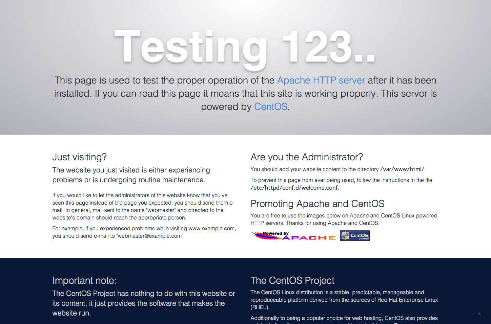

Apache¶
はじめに¶
本ドキュメントはOSS WebサーバーソフトウェアApacheのインストール、初期設定に関する内容を記述します。
インストール手順¶
注釈
本手順はCentOS7.xを想定して書かれています。
特段の記載がない場合を除き、rootユーザーで作業することを想定しています。
1. Apacheのインストール
# yum info httpd
2. Apacheのインストール
# yum -y install httpd実行コマンドが完了して ”Complete! ”と表示されていればインストールは完了です。
3. バージョンの確認
# httpd -version
ヒント
バージョン確認時の結果表示（例
[root@localhost ~]# httpd -version
Server version: Apache/2.4.6 (CentOS)
Server built: Apr 12 2017 21:03:28
4. 自動起動設定
# systemctl is-enable httpd.service# systemctl enable httpd.service# systemctl start httpd.service
起動状態の確認¶
# systemctl status httpd.service
ブラウザからのアクセス確認¶
アドレス http://<サーバーのIPアドレス>/ にアクセスします。下図のような Apache httpd の初期画面が表示されていれば、成功です。